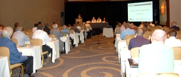
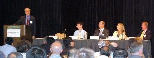
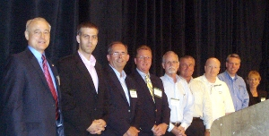
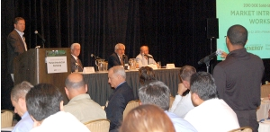
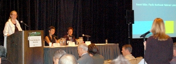
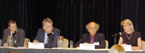
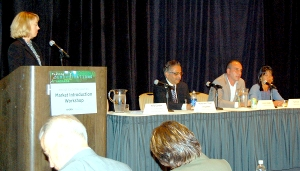

More than 300 lighting leaders from across the continent gathered in Philadelphia July 20–22, 2010, for the fifth annual Solid-State Lighting (SSL) Market Introduction Workshop, hosted by DOE. The audience was diverse, spanning the spectrum from industry, to government, to efficiency organizations, to utilities, to municipalities, to designers and specifiers, to retailers and distributors. The purpose was to share the latest insights, updates, and strategies for the successful market introduction of high-quality solid-state lighting products.
Pre-Conference Events
The two-day workshop began on July 21 but was preceded by an optional half-day of free, beginner-level tutorials on July 20. These tutorials covered the basics on LED lighting—from technology fundamentals, to early experiences with LED lighting installations, to results from product testing, to understanding LM-79 and LM-80, to using the Lighting FactsCM label, to comparing LED integral replacement lamps, to evaluating LED products.
That same day, July 20, there was also a 90-minute webcast on evaluating LED street lighting solutions, which could be attended either in person in Philadelphia or online for those who couldn't make it there. The webcast, which drew more than 500 attendees in total, reviewed the ways in which DOE's Municipal Solid-State Street Lighting Consortium is helping cities across the country make informed decisions, and featured three Consortium members who shared their experiences implementing street lighting evaluations.
Tod Rosinbum of the City of Portland, Oregon, noted that among the different light sources tested, LEDs provided the best uniformity and the most potential for controls, and that their apparent brightness raised the comfort level of drivers as well as pedestrians. Amy Olay of the City of San Jose, California, identified LED street lighting's main challenges as high prices, long returns on investment, variations in product quality among manufacturers, insufficient warranties, and disparity in longevity between the driver and LED chip. John Walter of National Grid presented a utility's perspective, focusing on such things as tariffs and rates, product variability, and energy rate development. Edward Smalley of the City of Seattle, who served as webcast moderator, talked about the activities of the Consortium, which he chairs.
Big Changes Ahead
On July 21, DOE SSL Portfolio Manager James Brodrick kicked off Day 1 of the workshop by pointing out that new lighting standards mandated by the Energy Independence and Security Act of 2007 (EISA) will start rolling out in 2012, effectively phasing out lower-efficiency light bulbs and putting an end to the Incandescent Age. Remarking that the SSL revolution "promises unprecedented levels of energy efficiency," he noted that there are still many unknowns about the technology, as well as much hype and misinformation. Brodrick likened DOE's SSL programs to "the guardrails" that keep swift-moving vehicles from straying off track, and cited the need for education in light of the formidable learning curve that everyone involved faces.
A panel discussion entitled "Get Ready: A Decade of Change" followed, taking a look at the current LED replacement lamp market, where it's headed, and what preparations are needed for the changes that are in store. Jason West of D&R International presented a market snapshot based on data from DOE's Lighting FactsCM program. In reviewing the upcoming EISA lighting standards, he noted that while current LED omnidirectional replacements meet the required efficacy levels, most can only match the light output of 40W incandescent. West also noted that there are no LED reflector lamp replacements for the highest lumen levels, such as 90W PAR 38, and that LED replacements for linear fluorescent lamps fall below the light output levels of the products they're intended to replace. He emphasized the need for consumer education, cautioning that "consumers are going to have to understand how to make sense of these new products."
Hampton Newsome of the U.S. Federal Trade Commission (FTC) discussed his agency's new consumer labeling requirements for lamps, which go into effect in 2011 and are based on a multi-format label patterned after DOE's Lighting Facts label, with lumens and energy cost on the front of the packaging and the "Lighting Facts" on the back. "The changes are intended to help consumers understand the high-efficiency bulbs that are coming out," he explained, adding that the goal is for people to focus on lumens rather than watts. Newsome also reviewed the FTC's regulations regarding unfair or deceptive advertising claims, noting that the two overriding principles are to tell the truth and be able to substantiate all claims.
With an eye toward identifying lessons learned, Shana Cockerham of D&R International reviewed the recent experiences of Australia and Europe in implementing lighting standards similar to the impending ones mandated by EISA. She observed that the transitions to lighting that's more energy-efficient varied considerably, affected by the political environment, the extent of government involvement, and the media's interpretation of the new lighting standards. Cockerham noted that at least some stockpiling of "old" bulbs occurred in all jurisdictions, and that consumer education that involved the government working closely with retailers, manufacturers, and utilities would have eased the transitions in many of the countries.
Bill Hamilton of The Home Depot spoke about the need in the coming years for a whole new way to educate consumers that takes into account SSL and other kinds of energy-efficient lighting. He suggested a 360-degree approach that incorporates as many communication networks as possible—from in-store merchandising, to public service announcements, to utility rebates, to online education. Hamilton advocated giving the transition a positive spin and emphasizing the substantial energy-saving benefits. He noted that the task is daunting, with more than 100 years of "watts = brightness" thinking to overcome, and cited insufficient consumer education as a major reason why the attempt to convert the U.S. to the metric system failed so miserably back in the 1970s. "We all have skin in this game, and everybody plays a different role – retailers, manufacturers, utilities, and government," he said.
Brodrick, who served as moderator, concluded Panel 1 by announcing DOE's plans to launch a major consumer education initiative on the upcoming legislative changes that will impact the lighting market. He said the goals will be to familiarize consumers with lighting options and applications in order to prepare them for the impact of EISA, avoid negative perception of the new lighting requirements, and minimize stockpiling of phased-out bulbs. Joining Brodrick for the announcement were Hamilton of The Home Depot as well as representatives from Costco Wholesale, Grainger, GE, Philips, Cree, and OSRAM Sylvania, all of whom are already on board to work with DOE in this effort. Brodrick said the initiative is still in the planning stage and there will be more details in the coming months.
Implementing LED Lighting Programs
 Next came a panel on strategies and best practices for successfully implementing LED lighting programs. The panel was moderated by Ed Schmidt of Northeast Energy Efficiency Partnerships (NEEP), which facilitates regional partnerships to advance the efficient use of energy. Before introducing the panelists, he invited the audience to join DOE's Technical Information Network for Solid-State Lighting, which increases awareness of SSL technology, performance, and appropriate applications and provides members with regular updates on technical progress of SSL technologies, upcoming meetings and events that address related market issues, and outreach materials developed for target audiences.
Next came a panel on strategies and best practices for successfully implementing LED lighting programs. The panel was moderated by Ed Schmidt of Northeast Energy Efficiency Partnerships (NEEP), which facilitates regional partnerships to advance the efficient use of energy. Before introducing the panelists, he invited the audience to join DOE's Technical Information Network for Solid-State Lighting, which increases awareness of SSL technology, performance, and appropriate applications and provides members with regular updates on technical progress of SSL technologies, upcoming meetings and events that address related market issues, and outreach materials developed for target audiences.
Margaret Song of Cape Light Compact (CLC), which provides energy efficiency programs for 200,000 customers in Massachusetts and is increasing its goals for SSL, said that the characteristics her organization looks for when considering lighting products include energy savings that are real and attributable, the ability to track the data, customer acceptance of the product, savings versus cost, and the existence of market channels. She observed that while CLC's focus is on residential lighting, it's very important to coordinate with commercial lighting channels to ensure industry-wide progress. Song said CLC volunteered to conduct an L PrizeSM field assessment in order to accelerate its own learning process about SSL.
Sarah Eckstein of NEEP talked about the SSL Qualified Products List (QPL) maintained by the DesignLightsTM Consortium (DLC), a resource for high-quality, energy-efficient commercial lighting design and information in the Northeast. She noted that a major problem with SSL is that there are too many LED products on the market too soon, with too much attendant risk, which necessitates some kind of independent assurance of quality and performance. Eckstein explained that the QPL provides customers and energy program managers with such assurance and at present covers products in 10 application categories. She noted that to date, the QPL is used in 27 states and two Canadian provinces.
Gabe Arnold of Efficiency Vermont noted the increase in the number of commercial LED lighting products rebated in that state, from 497 in 2008 to 2,188 so far in 2010, but emphasized that the corresponding increase in energy savings (from 73 megawatt hours to 603 MWh) is a drop in the bucket compared with his organization's 2010 goal of saving 36,000 MWh. He predicted that LED lighting will start to play a much more significant role in 2011, with the advent of more eligible products, enhanced incentives, new marketing and education efforts, and targeted initiatives. Arnold cited PAR and MR integral lamps, outdoor and sign lighting, downlights, and refrigerated case lighting as near-term SSL opportunities.
Performance Issues
 The third panel of the workshop focused on SSL reliability and performance issues. Moderator Eric Richman of Pacific Northwest National Laboratory (PNNL) spoke about reliability and current standards for measurement, observing that the potential long life of LEDs requires that not only the lamp, but all components of the luminaire, be taken into consideration when determining lifetime. After reviewing existing LED lighting standards, he discussed the status of those still in development—among them Illuminating Engineering Society standards for lumen maintenance of LED lamps and luminaires; National Electrical Manufacturers Association (NEMA) standards on dimming (LSD 49), drivers (SSL-1 Driver), and module integration (LSD 45); an Institute of Electrical and Electronics Engineers (IEEE) standard on flicker mitigation (PAR 1789); and a color metric from the International Commission on Illumination (CIE TC1-69—Color Quality Scale).
The third panel of the workshop focused on SSL reliability and performance issues. Moderator Eric Richman of Pacific Northwest National Laboratory (PNNL) spoke about reliability and current standards for measurement, observing that the potential long life of LEDs requires that not only the lamp, but all components of the luminaire, be taken into consideration when determining lifetime. After reviewing existing LED lighting standards, he discussed the status of those still in development—among them Illuminating Engineering Society standards for lumen maintenance of LED lamps and luminaires; National Electrical Manufacturers Association (NEMA) standards on dimming (LSD 49), drivers (SSL-1 Driver), and module integration (LSD 45); an Institute of Electrical and Electronics Engineers (IEEE) standard on flicker mitigation (PAR 1789); and a color metric from the International Commission on Illumination (CIE TC1-69—Color Quality Scale).
Fred Welsh of Radcliffe Advisors discussed the first edition of LED Luminaire Lifetime: Recommendations for Testing and Reporting, which was published in May 2010 by a working group convened under the guidance of the SSL Quality Advocates oversight committee as a joint effort of DOE and the Next Generation Lighting Industry Alliance (NGLIA). He noted that the recommendations advocate a system reliability approach, and that they recognize that both lumen maintenance lifetime (typically defined as the estimated time for luminous flux to fall below 30% of the initial value) and electrical failure lifetime (the point in time when some fraction of a luminaire population has experienced lights-out failure) are important components of SSL lifetime.
Howard Wolfman of Lumispec Consulting discussed the development of dimming standards for solid-state lighting. He noted that there is a compatibility problem between SSL luminaires and dimmers, especially in the residential sector, with users reporting poor dimming performance, even with dimmers that are specified by luminaire manufacturers. Wolfman said the ideal standard would assure that all compliant dimmers and drivers would deliver good dimming performance when paired. He described the ongoing efforts by the NEMA and the American National Standards Lighting Group to create such standards.
Recognition for Lighting Facts Partners
Brodrick gave special recognition to nine Lighting Facts partners, for demonstrating their ongoing commitment to the Lighting Facts program and to product evaluation by going "above and beyond" to integrate Lighting Facts into their everyday business practices. The nine partners recognized were Cree, CRS, Philips, Renaissance Lighting, The Home Depot, Costco Wholesale, Grainger, Lightswitch Architectural, and greenTbiz. Each of these organizations was given a Lighting Facts widget for use on their website, and will be featured on the Lighting Facts home page.
Lessons from the Field
Panel 4 of the workshop focused on lessons learned from recent real-world installations of LED lighting products, touching on such things as product design, installation issues, dimming, flicker, and lifetime. "This is where the rubber has met the road—or maybe where the bug has met the windshield," said panel moderator Bruce Kinzey of PNNL, who manages DOE's GATEWAY demonstration program.
Harry Hobbs of InterContinental San Francisco described a GATEWAY demonstration project in which switching to LED replacement lamps satisfied that hotel's high standards for appearance and functionality while saving energy. He described the selection criteria for the lamps, as well as the rigorous testing process for submitted products. Hobbs reviewed problems encountered, such as inflated performance claims, dimming issues, and incompatibility with electronic transformers. Cautioning that the cheapest LED products are not necessarily the best, he advised comparing samples with incumbent lamps in hands-on mockups, testing in the actual fixtures for at least a week, and getting a three-year warranty for light output and color stability.
Ed Ebrahimian of the City of Los Angeles described his city's experience selecting and installing LED street lighting to replace the incumbent technology, which primarily consists of high-pressure sodium (HPS). He explained that 20,000 LED street lights are already installed, with another 120,000 to be installed over the next four years. Ebrahimian noted that not all manufacturer claims are true, and observed that the change from HPS to LED luminaires not only improved visibility, but was perceived by end users to significantly increase lighting levels, even though this wasn't actually the case. Ebrahimian said the LED luminaires have better uniformity than HPS, bring energy savings of 55%, and have gotten mostly positive feedback.
Lighting designer Frank Florentine described a project installing LED lighting in a 5,000-square-foot gallery at the National Air and Space Museum's Steven F. Udvar-Hazy Center, to replace the incumbent standard mercury units. He reviewed the advantages of LED fixtures in that setting, including energy efficiency, ease of installation, lighter weight, a multi-tap ballast, and instant on and off. Florentine noted that the energy savings from switching to SSL ranged from 76% for 2'x2' drop-ins, to 40% for PAR 36 and track lighting, and that there was much less ultraviolet light emitted, and higher illumination levels.
Day 1 concluded with a reception sponsored by Connecticut Energy Fund, which provided additional opportunities for attendees to talk with panelists, ask questions, and network.
Solid-State Lighting in Higher Education
Day 2 of the workshop began with a panel that reviewed the issues which surfaced at a recent DOE workshop on SSL in higher-education facilities, taking a look at barriers to adoption, where LED products work best on campus, and how to avoid the pitfalls. Jean Stark of JMZ Architects and Planners reviewed the size and diversity of the higher-education market, as well as the enormous range of different lighting applications that can be found on college campuses—from classrooms, to laboratories, to lecture halls, to conference rooms, to gathering spaces, to offices, to theaters and concert halls, to libraries, to student centers, to residence halls, to childcare centers, to galleries and displays, to animal facilities, to dining halls, to retail space, to recreation facilities, to athletic facilities, to campus service spaces. She noted the different lighting requirements of the various college segments, including the administration, the faculty, the students, and the facilities personnel.
Lighting designer Sandra Stashik of Grenald Waldron Associates reviewed key criteria for exterior campus lighting, including vertical and horizontal illuminance, glare, luminance, visual hierarchies, color characteristics, energy usage, sustainability and carbon footprint, ease of maintenance, and first cost versus payback. She gave examples of some of the problems her firm has encountered implementing SSL in higher-education projects, and presented potential best practices for use of LED lighting in campus applications. Stashik stressed the different between light quality and light quantity, and identified water, temperature, connectors, and short lifetime as potential SSL failure issues.
Panel moderator Naomi Miller of PNNL reviewed key conclusions that emerged from the recent DOE workshop on SSL in higher education, in which manufacturers of LED luminaires, components, and controls as well as facility managers, engineers, and lighting designers focused on identifying ways to change SSL product design in order to improve quality, functionality, and sustainability. Among the conclusions were that electricians should get specialized training in SSL to ensure that LED products get installed properly, that luminaire manufacturers should take responsibility for all components, and that LED luminaires should be designed to signal when their light output degrades below a certain point.
Light at Night
Panel 6 focused on what science knows and doesn't know about the possible health implications of exposure to light at night (LAN). The panel was moderated by Jason Tuenge of PNNL, who set the stage by reviewing the advantages of LEDs over other lighting technologies with regard to LAN—including energy savings, greater spatial and temporal control, and improved color contrast. He noted that the efficacy of LED luminaires typically improves as the correlated color temperature (CCT) increases (i.e., as the light's blue content increases), so that restricting the blue content would decrease the energy savings. He explained that the goal of the panel is to get guidance from the panelists on how to responsibly use SSL technology for both outdoor and indoor applications.
Ronald Gibbons of Virginia Tech Transportation Institute discussed his research on the visual effects of broad-spectrum roadway lighting, including LED luminaires. He explained that because the human eye is more sensitive to broad-spectrum (i.e., bluer) light sources in outdoor environments at night, and because these sources can also provide more color contrast than those with lower CCTs, there is the potential to increase lighting performance by broadening the spectrum. He reviewed three different studies that indicated improved visual performance with broad-spectrum street lighting compared with high-pressure sodium (HPS), even when the broad-spectrum illuminance levels were lower. Gibbons also noted that increased sky glow is a potential side-effect of increased visibility under broad-spectrum sources.
George Brainard of Jefferson Medical College discussed his research on the non-visual effects of light on humans. He explained that photoreceptors in the human eye play a key role in regulating the body's circadian (daily) cycles and are especially sensitive to light in the blue range. Brainard indicated that excessive exposure to LAN can suppress the body's production of the sleep-inducing hormone melatonin, thus interfering with sleep and various biological processes. He said more research is needed to know the degree of exposure necessary to produce this effect, and noted that there may prove to be other negative health effects of LAN exposure (e.g., breast cancer), as well as therapeutic benefits of light (e.g., in treating winter depression). Brainard concluded that whereas daytime lighting should be brighter, nighttime lighting should be as dim as possible, and both should have spectra designed to optimally balance energy efficiency with visual and non-visual needs.
Mariana Figueiro of Rensselaer Polytechnic Institute reviewed research that illustrates the uncertainties about the possible health effects of exposure to LAN. She discussed a recent study in which her team found that nurses working a day shift were better synchronized with the natural daylight cycle than their rotating-shift counterparts in terms of activity levels and light exposures. Figueiro also described an ongoing study to investigate a hypothesized link between sky glow and breast cancer rates for women in urban areas, and noted that while no firm conclusions can be drawn at this point, it appears urban dwellers are exposed to negligible amounts of light while sleeping. Last, she summarized findings from another recent study in which her team estimated melatonin suppression caused by various types of light sources in typical outdoor installations. While the higher-CCT sources were predicted to increase melatonin suppression, the effects for realistic exposure periods appeared to be quite small, and Figueiro reiterated that additional studies are needed.
Possible Effects of Flicker
 Panel 7 explored the issue of flicker and its possible effects on health and visual comfort. Moderator Michael Poplawski of PNNL set the stage for the other panelists, giving the background and pointing out that every light source has some kind of modulation.
Panel 7 explored the issue of flicker and its possible effects on health and visual comfort. Moderator Michael Poplawski of PNNL set the stage for the other panelists, giving the background and pointing out that every light source has some kind of modulation.
Jennifer Veitch of the National Research Council of Canada's Institute for Research in Construction observed that the brain detects some of this modulation, even though it's not perceived, and that such unperceived flicker has been shown to disrupt eye movements across text. She noted that flicker can also cause headache and eyestrain, that some effects of flicker are not immediate, and that younger people appear to be more at risk than older ones. Veitch explained that in addition to frequency, the depth of the modulation, and possibly its shape, determine flicker's effects. "Paying attention to flicker while designing the next generation of SSL is one piece of the puzzle in ensuring that it is widely accepted and successful," she concluded.
Kevin Willmorth of Lumenique discussed questions of modulation in the context of lighting and product design. He made the points that LED flicker is not an AC or DC issue, and that frequency alone doesn't provide an effective basis for any standard in isolation, because defining the modulation is also critical. "Our metrics really aren't working to describe what we're seeing and what we're perceiving," he said. Willmorth noted that studies of the effects of flicker are limited in number and that many of them are decades old. He emphasized that the effects of dimming should be included in any discussion of LED flicker, and said the industry needs design guidance about flicker for end-use application and product development.
Brad Lehman of Northeastern University discussed the activities of the IEEE committee he chairs, IEEE PAR1789, which is developing recommended practices to aid the design of LED driving systems to modulate at safe frequencies for their particular applications, in order to protect against such health risks as headaches, eyestrain, and epileptic seizure. He noted that these health risks have been identified as being associated with low-frequency modulation of high-brightness LEDs. Lehman observed that because LEDs respond instantaneously to the electric current, there's no "filtering" of the flicker through time delay, as there is with other lighting technologies.
A Look Ahead
Panel 8 explored where LED performance is projected to head, what new lighting product form factors are emerging, and how the development of SSL is enabling companies to think differently about the way lighting is delivered as a system. Moderator Kelly Gordon of PNNL reviewed the progress that's been made to date in terms of LED luminaire performance, as well as performance projections for the near future, but noted that it's also important to "think outside the box" in terms of how light is delivered to spaces and tasks, when the lights are on and at what levels, where the light goes, and even how the lights are powered.
Makarand "Chips" Chipalkatti of OSRAM Sylvania described how SSL is creating a new paradigm for lighting, with the potential for such features as control systems to cycle lights automatically, furniture that incorporates light-emitting fibers, and special on-demand lighting to accent hair or dress colors. He reviewed the key elements that will accelerate the adoption of SSL. These, Chipalkatti said, include evolution (change and constant modification), flexibility (e.g., simple plug-and-play designs that have a clear path to minimal-cost upgrading), conversion of incumbent technology to SSL, interoperability (design standardization of key elements of the system), and infrastructure (e.g., DC power distribution).
Jeremy Stieglitz of Redwood Systems described a new method his company is developing to power LEDs, which amounts to a unified DC power and communications system architecture. He explained that the new architecture centralizes the LED drivers, which results in better performance, added intelligence, drive flexibility, better dimming, and easier installation. Stieglitz noted that communication takes place on the same power infrastructure, which makes for a rich and robust sensor and control platform, facilitates multiple sensors and per-light knowledge, and simplifies specification, installation, and troubleshooting. He said the new system has the potential to leverage power, sensors, and communications for all "smart building" needs.
Karen Lee of EMerge Alliance described a hybrid AC/DC power platform for use in commercial buildings, which integrates interior infrastructures, power, controls, and peripheral devices. She said such a platform reduces energy consumption by 30%, requires 15% less capital than present platforms, and is twice as reliable. Lee explained that low voltage at the user interface enables plug-and-play device flexibility, and that the system facilitates energy savings from efficient lighting, controls, and other electrical devices in addition to allowing direct integration of site-based renewable energy sources. She described how EMerge Alliance is developing an open standard for such a platform, and discussed several demonstration sites using the platform.
Brodrick concluded the two-day workshop by thanking participants for their input and participation. He noted that the next DOE SSL workshop is in February 2011—the eighth annual Solid-State Lighting R&D Workshop—and also encouraged attendees to stay apprised of DOE SSL program activities by visiting www.ssl.energy.gov.